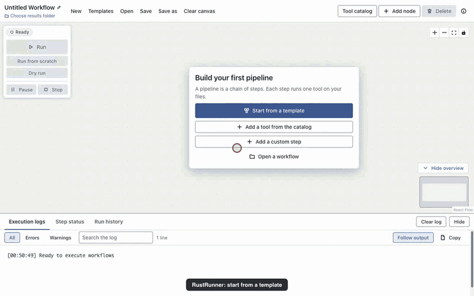
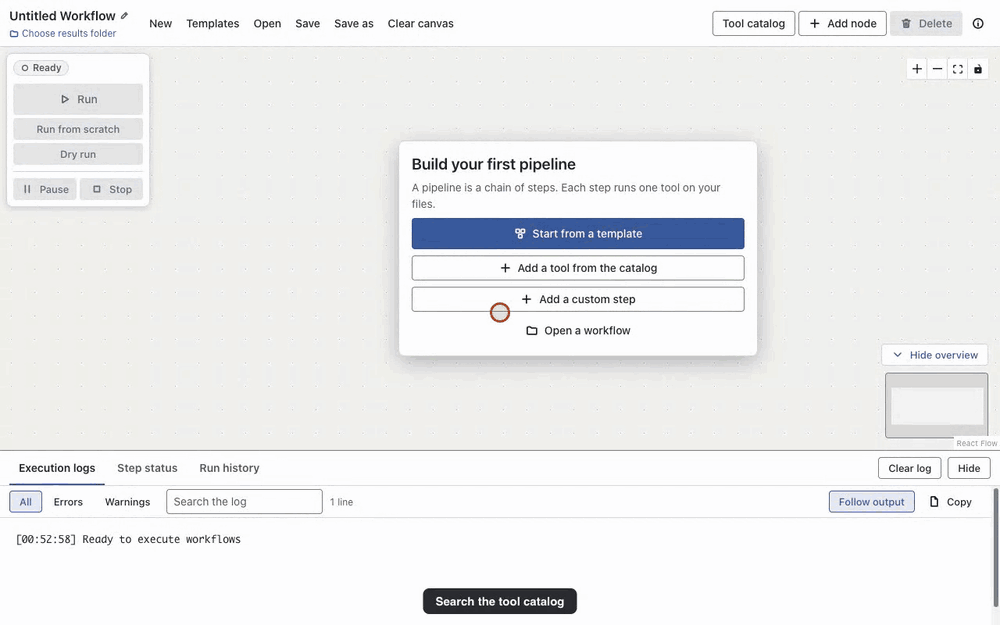
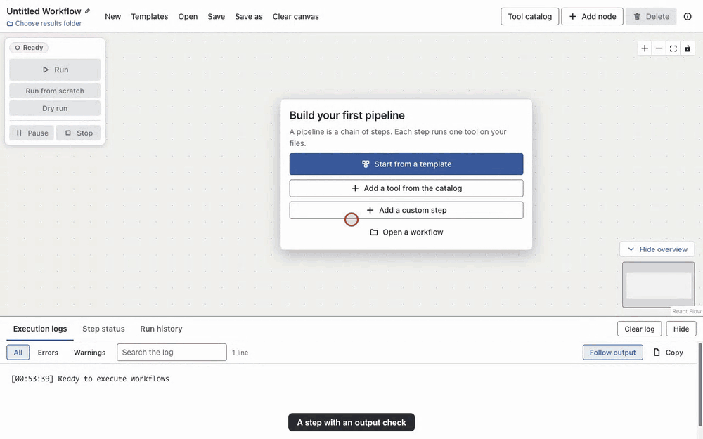

Build and run bioinformatics pipelines by drawing them.
RustRunner is a desktop app for biologists. Pick a template or add tools from a catalog, connect them, press Run. No workflow language to learn, no command line needed. The tools install themselves into isolated environments.
Download 1.0.0-beta.1 Follow the Ribo-seq example
Open beta. Version 1.0.0-beta.1 is the first public beta of RustRunner 1.0. It is tested most on macOS with Apple silicon; Windows and Linux builds are published but not yet tested end to end. Please report what breaks. Known limitations.
From a template to a finished run
This recording is the real app running the Ribo-seq with UMIs template on a public human dataset. Steps turn from waiting to running to done as the tools run; long waits are cut from the video, nothing is simulated.

What you get
14 ready-made templates
Genome assembly, Epigenomics, Read quality, Metagenomics, Long reads, RNA sequencing, DNA sequencing. Choose your files, check a few settings that depend on your library, and the whole pipeline appears on the canvas.
85-tool catalog
Every entry names its input and output files, installs the tool at a pinned version, and was run against the real program. See the list.
Named file slots
Connect two steps and the output goes to the input that accepts its file type. Green edges fit, orange edges say what is wrong.
Safe to rerun
Steps whose inputs did not change are skipped. Failed steps can retry, time out and be checked (file exists, not empty, enough lines). Keep going runs the independent branches after a failure.
Live status
Every step shows waiting, running, retrying, done, failed or skipped with words and icons, and the log can be searched and filtered.
Reports and history
Each run writes a self-contained HTML report and is listed in the run history. Templates that end in MultiQC give one combined quality report.
A catalog that tells you what fits
Search by name, job or file type. "Only tools that fit after the selected step" hides what cannot read the selected step's output. When you connect two steps, the file slot fills in by itself.

When something fails, it says what and where
A failed check shows a card that names the step, the file and the setting. Edit step opens exactly that setting. Every run is kept in the run history with an HTML report.

Download
Builds for each release are on the GitHub releases page (the open beta is marked as a pre-release).
| System | File | Notes |
|---|---|---|
| macOS, Apple silicon | .dmg or .zip (arm64) | The best tested system. Not signed: see below. |
| macOS, Intel | .dmg or .zip (x64) | Not signed. |
| Windows 64-bit | .exe installer | Not yet tested end to end. |
| Linux 64-bit | .AppImage | Not yet tested end to end. |
macOS says the app cannot be opened? The builds are not signed with an Apple developer certificate. Drag RustRunner to Applications, then Control-click (right-click) it and choose Open, then Open again. If macOS still refuses, run xattr -dr com.apple.quarantine /Applications/RustRunner.app once.
The app checks for updates on start. On Windows and Linux it downloads and installs them; on macOS it tells you and links to the download page, because the builds are unsigned. A beta build is offered the next beta and then the final 1.0; a stable build is never offered a beta.
On first run the app downloads the tool installer (micromamba) if it is missing, and each tool the first time a workflow needs it. Allow several GB of disk space and a network connection for that first run.
Known limitations of the beta
- macOS on Apple silicon is the primary tested system. Windows and Linux builds are published but have not been tested end to end.
- STAR and a few other tools have no native Apple-silicon build and run as Intel builds, which needs Rosetta.
- Tool versions are pinned, but their dependencies are not fully locked, so a future install may resolve a dependency differently.
- Commands were validated on synthetic and small real data, not on every kind of project.
- Builds are not code-signed, so macOS and Windows show a warning on first start.